Kappale 7 Projektiot
UKG:ssa sydäntä tarkastellaan tyypillisesti muutamasta standardinäkymästä eli projektiosta. Ei ole aloittelijan näkökulmasta erityisenkään tärkeää, että osaisi päässään peilata näytöllä näkyvää oikeaan anatomiaan, vaan tärkeintä on se, että oppii tunnistamaan, miltä tiettyjen projektioiden tulisi näyttää ja oppia tunnistamaan niissä näkyvät asiat. Vasta myöhemmin voi syventyä siihen, miten ultraääniaallot oikeasti kulkevat anatomisesti ja miksi tietty projektio näyttää siltä, miltä se näyttää.
Käydään kuitenkin nyt jo tässä samalla se, miten projektiot muodostuvat, koska yksi yleisimmistä kommenteista, jonka olen saanut UKG-aloittelijoilta on se, että “projektioiden ymmärtäminen on vaikeaa, kun osaamani anatomia ei oikein sovi loogisesti näytöllä näkyviin kuviin”. Olen hyödyntänyt paljon tältä sivulta kerättyjä kuvia. Sivustolta löytyy anatomisia malleja, joita voi itsekin mennä pyörittämään, jos anatomia ei täysin avaudu täysin kappaleen kuvista.
Tärkeimmät pääprojektiot ovat PLAX, PSAX, A4C/A5C (ja A2C/A3C) ja SC/IVC (ja tämä on myös tyypillinen tutkimusjärjestys perusteellisessa rakenteellisessa UÄ:ssä). Näistä on runsaasti variaatioita, joista muutamia on hyvä osata. Käydään tärkeimmät ja yleisimmät projektiot ja niistä tunnistettavat rakenteet tässä kappaleessa läpi ja syvennytään hieman harvinaisemmin arvioitaviin rakenteihin ja projektioihin vasta seuraavassa kappaleessa.
7.4 Parasternaalinen pitkittäisprojektio (parasternal long axis, PLAX)
Tyypillisesti PLAX on ensimmäinen projektio, joka potilaalta etsitään. Sen (yleensä) löytää siten, että asettaa anturin rintalastan vasemmalle reunalle n. rintalastan keskiosan tasolle (eli n. 3.-4. kylkiluuväliin). Anturin “nypyn” tulisi osoittaa mediaalisesti potilaan oikeaan olkapäähän/kainaloon.
Koska nypyn puoleiset UÄ-aallot kulkevat sydämen kannan puolelta läpi ja toisella puolella taas enemmän kärjen läheiseltä alueelta (kärkeä ei kuitenkaan tulisi nähdä kokonaan), niin projektion oikealla puolella (cardiac modessa eli indikaattori näytön oikealla) on sydämen kraniaalisemmat rakenteet ja vasemmalla taas kaudaalisemmat eli apeksin puoleiset rakenteet. AP-suunnassa liikuttaessa ensiksi tulee vastaan anteriorisimmin (lähimpänä rintalastaa) sijaitseva oikean kammion vapaa seinämä (RVFW), oikea kammio ja sen ulosvirtauskanava (RVOT). Tämän jälkeen aallot lävistävät kammioväliseinän (IVS). Seuraavaksi aallot etenevät vasempaan kammioon (LV) ja aortan tyveen (Ao), halkaisten vielä aorttaläpän (ensiksi oikean koronaarikuspin (RCC) ja yleensä sen alla non-koronaarikuspin (NCC)) ja mitraaliläpän (ylempänä kuvassa anteriorinen purje (AMVL) ja sen alla posteriorinen purje (PMVL)) sekä valoittaen vasempaa eteistä aina vasempien lokeroiden takaseinämien (PW tai kammion suhteen virallisesti inferolateraalisen (IL) seinämän) läpi aina sydämen takana kulkevaan laskevaan rinta-aorttaan (descending aorta, DAO) saakka.
Parasternaalisissa ikkunoissa yleensä kynämäisempi tekniikka on luonnollisin ja paras. Yksi hyödyllinen vinkki kuvan stabiloimiseksi on muistaa pitää pikkurilli kiinni potilaassa, kun on löytänyt hyvän lokaation projektiolle. Pikkurilli toimii ankkurina kädelle ja vähentää anturin ei-haluttua liikkumista kuvantamisen ja mittausten aikana.
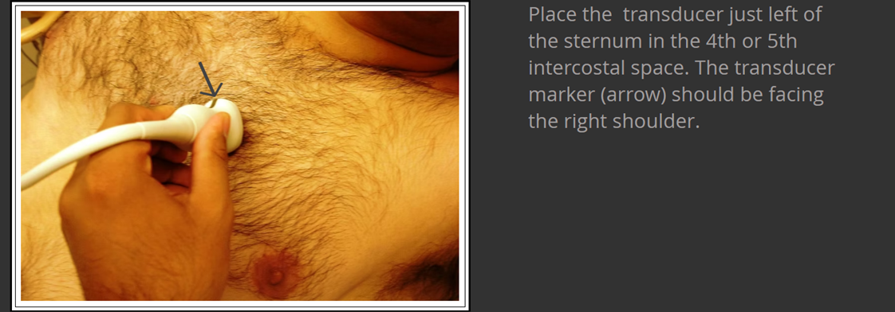
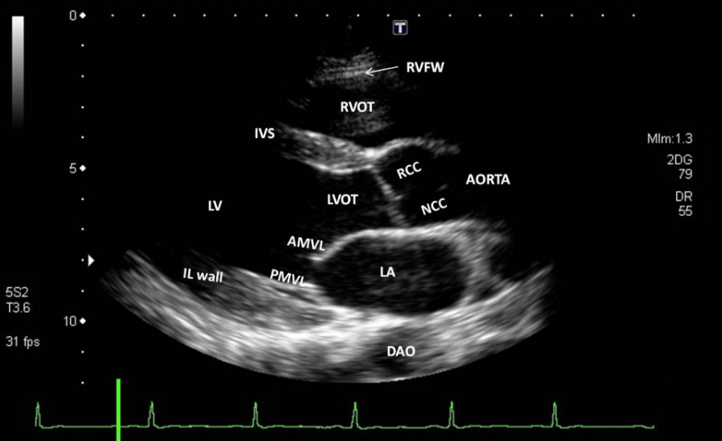
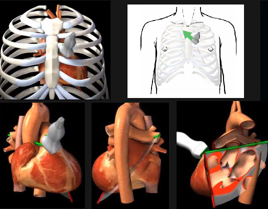
7.4.1 PLAX:n optimointi ja troubleshooting
Tässä on pitkä diapaketti Cornell Medical Collegesta, joka käsittelee PLAX:n optimointia ja antaa hyvinkin tarkat ohjeet siitä, miten kuvan saa oikeanlaiseksi. Ei kuitenkaan ole mielestäni kovinkaan järkevää opetella ulkoa kaikkia troubleshooting-ohjeita sen suhteen, miten missäkin ongelmakohdassa tulisi liikuttaa anturia. Fiksumpaa on vain viettää mahdollisimman paljon aikaa anturi kädessä oikeasti tutkien potilaita. Hiljalleen n-luvun noustessa oppii tunnistamaan, miten käden pienet korjausliikkeet vaikuttavat näytöllä näkyvään ja miten kuvaa saa paremmaksi. Oikeassa elämässä pitää vielä muistaa, että kaikilla on hieman erilainen anatomia ja projektioiden etsiminen poikkeaa potilaasta toiseen: joillakin saattaa olla “pysty sydän”, joillakin taas oikein mikään kylkiluuväli ei tarjoa riittävän hyvää ikkunaa. Kuitenkin mitä enemmän sydämiä näkee, niin sitä todennäköisemmin pystyy saamaan seuraavalta potilaalta paremmin projektiot esiin.
Käydään kuitenkin läpi (yksinkertaistetusti) millainen edes on “optimaalinen” PLAX, jotta tietää, mihin kuvatessaan tulisi kiinnittää huomiota.
- Yleensä foreshorteningin siis tunnistaa siitä, että apeksi “työntyy” kammioon ja kammio näyttää pieneltä pussilta.
- Yleensä paras troubleshooting-vinkki on rotatoida anturia hieman myötäpäivään - tämä auttaa kammion “avaamisessa”. Joskus tarvitsee siirtää anturia hieman mediaalisesti tai yksi kylkiluuväli ylöspäin tai joskus tarvitsee tehdä tilttausliikkeitä.
- Liian “pysty” sydän häiritsee erityisesti M-mode-mittauksia, mutta usein myös muita mittauksia, koska paras spatiaalinen ja lateraalinen resoluutio tulee 90 asteen kulmassa UÄ-aaltoihin nähdessä. Usein myös vertikaaliset seinämät ja foreshortening kävelevät käsi kädessä.
- Ratkaisu on tässäkin rotatoiminen myötäpäivään ja yleensä myös siirtyminen ylöspäin ja/tai mediaalisesti.
- Jos aortoseptaalinen kulma on rotatoitunut, niin pitää keinuttaa. Jos taas se on normaali, mutta kuva ei ole oikein keskitetty, niin siirtäminen kaudaalisesti/kraniaalisesti on usein paras.
Tässä alla vasemmalla kuvan keskitys on väärä, apeksia näkyy liikaa ja seinämät ovat liian vertikaaliset suhteessa parempaan kuvaan oikealla.

Tässä alla olevissa gifeissä ensimmäinen on liian pystysuora ja nähdään apeksin merkittävästi supistuvan sisäänpäin kammioon (foreshortening). Alemmassa videossa apeksia nähdään vähemmän ja seinämät ovat vähemmän vertikaalisesti asennoituneita. Mitraaliläppä ja aortoseptaalinen kulmakin ovat paremmin keskitettyjä.
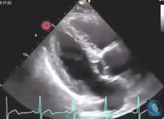
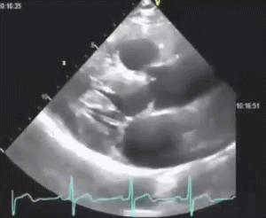
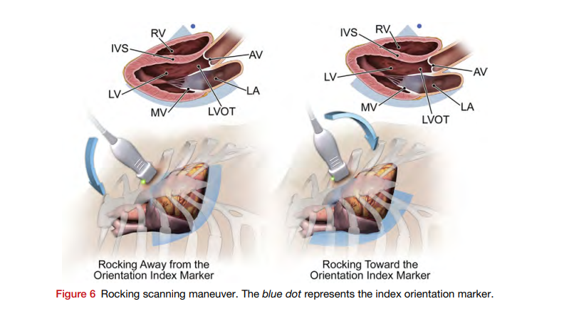
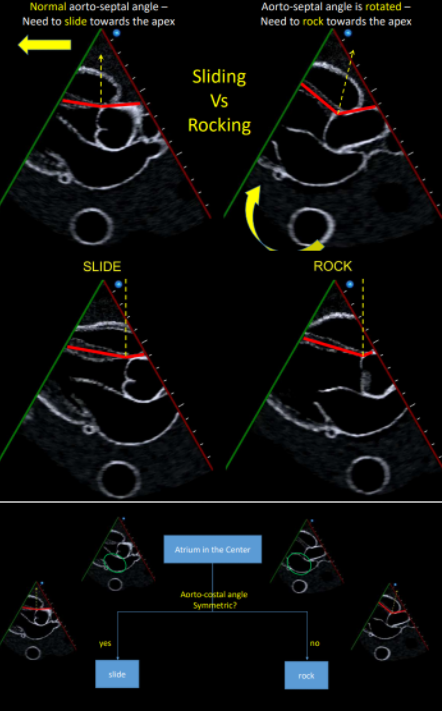
7.5 Parasternaalinen poikittaisprojektio / lyhyen akselin ikkuna (PSAX)
Seuraava projektio, johon yleensä siirrytään PLAX:n jälkeen on PSAX (parasternal short axis).
PSAX saadaan näkyviin pyörittämällä (rotate) anturia n. 90 astetta myötäpäivään PLAX-projektiosta. Tällöin anturin nypy yleensä osoittaa kohti potilaan vasenta olkapäätä. Joskus anturia tarvitsee siirtää hieman, koska rotaation aikana saatetaan menettää näkyvyyttä kylkiluiden välistä.
PSAX on todella dynaaminen ikkuna, koska UÄ-aallot siivuttavat sydämestä poikkileikkauksen pitkään akseliin nähden ja anturia tilttaamalla saadaan skannattua näitä poikkileikkauksia aorttaläpän tasolta aivan sydämen kärkeen saakka.
Käydään läpi eri leikkaustasot aloittaen kraniaalisimmasta tilttausasennosta (aorttaläpän ja oikean kammion ulosvirtauskanavan projektiosta) ja siirrytään kaudaalisesti kohti kärkeä.
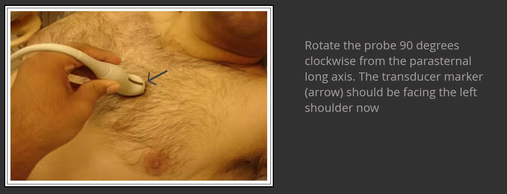
7.5.1 PSAX - Aorttaläppä ja RVOT (AV, TV, PV View)
Ääriasennossa aorttaa (eli käytännössä potilaan päätä) kohti tiltatessa nähdään poikkileikkaus aorttaläpästä ja sen ympäriltä voidaan tunnistaa myös paljon muitakin rakenteita.
Aorttaläpästä voidaan mm. arvioida, kuinka monesta liuskasta (kuspista) se muodostuu. Yleensä siis aorttaläppä on kolmiliuskainen, jolloin nähdään ns. “Mercedes-Benz-sign” eli läpän sulkeutuessa kuspien välirajoista muodostuva Y-muoto. Lisää aortan arvioinnista Aortta-kappaleessa.
Aortan “alla” kuvassa on vasen eteinen (LA). Se oikealla puolella voidaan usein nähdä siihen yhdistyvä eteiskorvake (left atrial appendage, LAA) ja tämän alla vielä keuhkolaskimoita (vasen ylempi (LUPV) ja vasen alempi (LLPV)) sekä vielä laskeva aorttakin (DAo).
Vasemman eteisen vasemmalla puolella näkyvä lokero on oikea eteinen (RA). Näiden välissä on siten tietysti eteisväliseinä (AS, IAS). Tämä onkin yksi parhaimmista paikoista arvioida väridopplerilla eteisväliseinäaukon (ASD) olemassaoloa; tästä lisää sydämen oikean puolen kappaleessa.
Oikean eteisen “päällä” on oikea kammio ja näiden välissä trikuspidaaliläppä. Tämä on usein todella hyvä paikka mitata trikuspidaaligradientti ja arvioida trikuspidaaliläppää yleisesti.
Oikeasta kammiosta voidaan erityisesti arvostaa ulosvirtauskanavaa ja vielä jopa pulmonaaliläppää. Tästä vielä hieman ylöspäin tiltaten ja mahdollisesti kylkiluuvälinkin ylös mentäessä saadaan itse keuhkovaltimoa ja sen bifurkaatiota tutkittua; tästä enemmän seuraavassa kappaleessa projektioihin syventyessä.
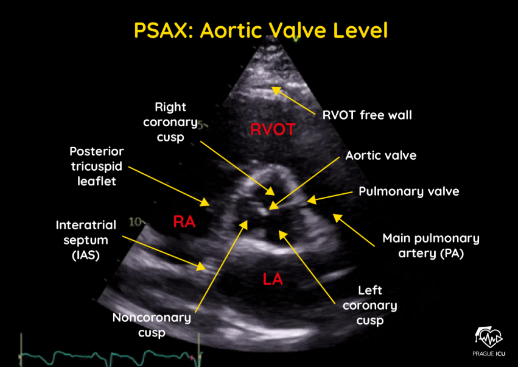
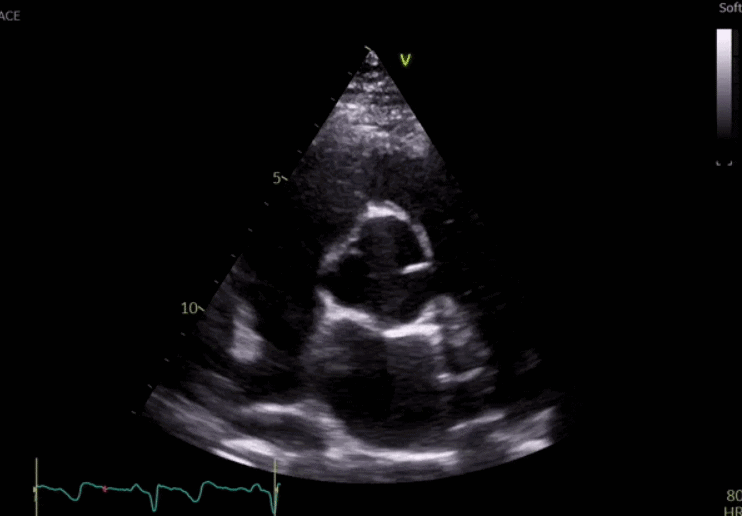

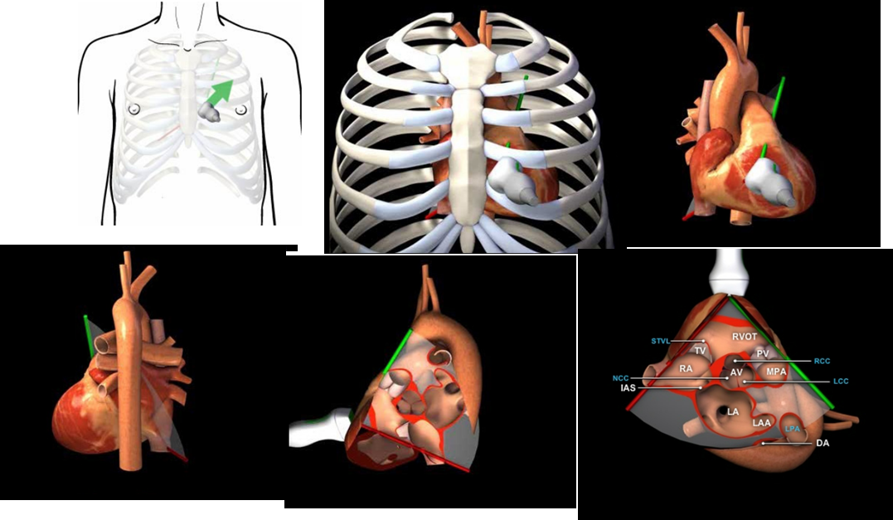
7.5.2 PSAX - Mitraaliläppä
Aorttaläppätasosta kärkeen päin tiltatessa päästään seuraavaksi mitraaliläppätasolle, jossa voidaan nähdä mitraaliläpän lisäksi sitä ympäröivä pyöreä vasemman kammion tyvi ja kammioväliseinämän toisella puolella oikea kammio.
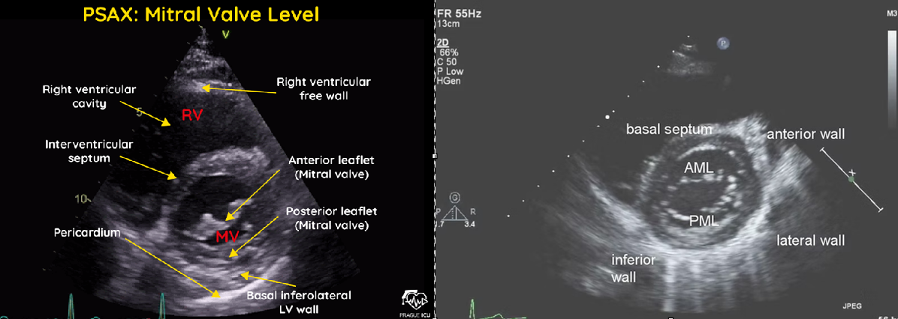
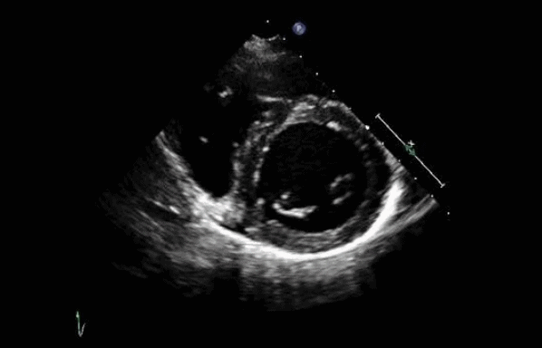
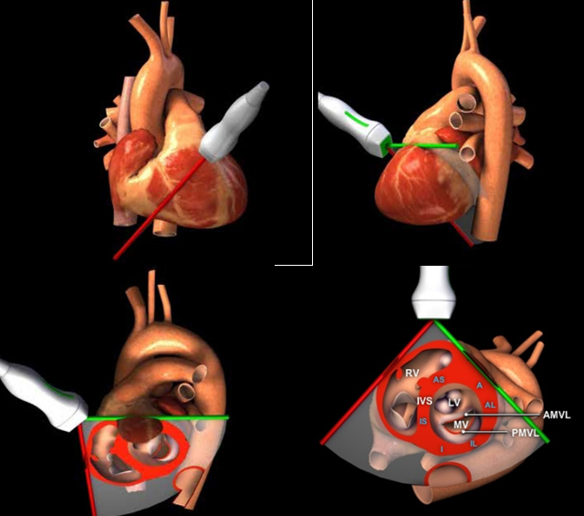
7.5.3 PSAX - Keskiventrikkelitaso/Papillaarilihastaso
Mitraalitasolta yhä kammion kärkeä päin kammetessa päästään vasemman kammion keskitasolle, jossa voidaan nähdä papillaarilihakset (anterolateraalinen ja posteromediaalinen). Tältä tasolta voidaan hyvin arvioida mm. vasemman kammion toimintaa (esim. ejektiofraktion ja seinämien mittauksia voidaan suorittaa tältä tasolta).
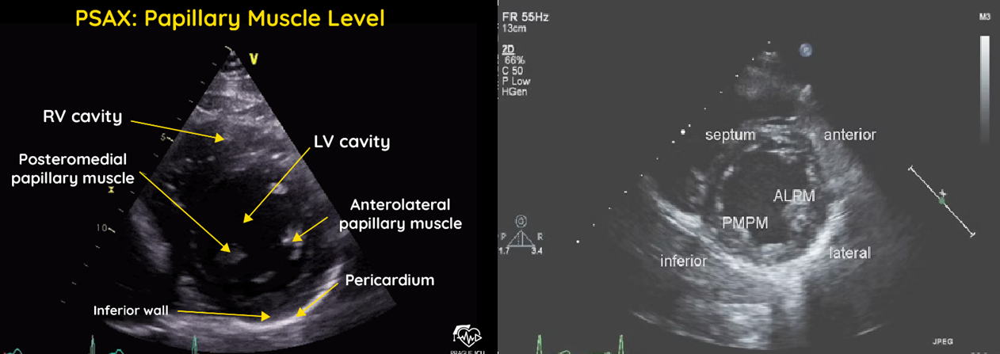
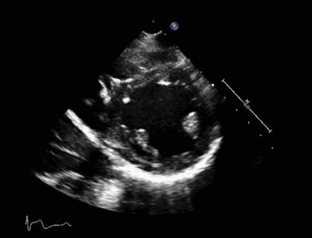
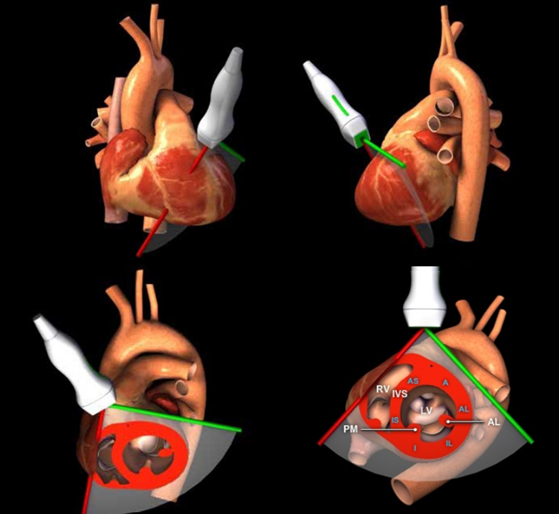
7.5.4 PSAX - Kärkitaso
Vielä kammion keskeltä kärkeä päin tiltatessa saadaan kammion kärki esiin. Kammion kärjessä ei enää ole selkeitä papillaarilihaksia näkyvissä.
PSAX-ikkunassa voidaan siis skannata koko vasen kammio sen tyvitasolta aivan apeksiin saakka ja näin saadaan seinämät ja niiden toiminta kauttaaltaan läpi. Tätä kautta saadaan hyvin löydettyä esim. paikalliset liikehäiriöt, jotka voisivat viitata mm. aikaisempaan infarktiin.
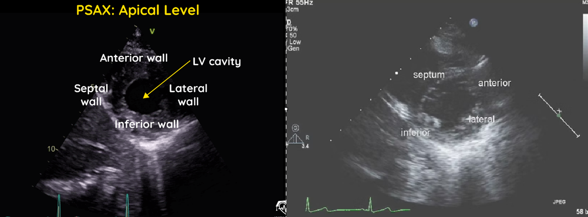
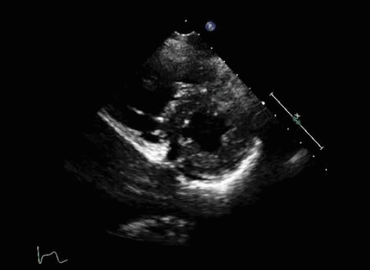
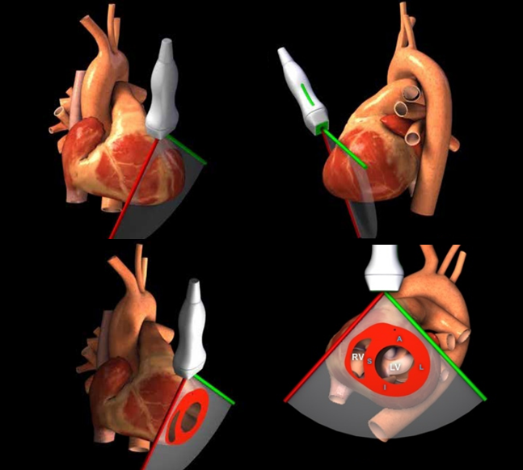
7.5.5 PSAX:n optimointi
Aorttataso:
Aortan juuren tulisi näkyä ympyränä keskellä näyttöä. Jos se on ovaali tai pisaramainen, niin se leikataan off-axis. Lisäksi optimaalisesti tulisi myös nähdä kuspien sulkeutumisrajat ja Mercedes-Benz-sign (kolmikuspisilla), mutta tämä ei aina ole näkyvyyden puitteissa mahdollista.
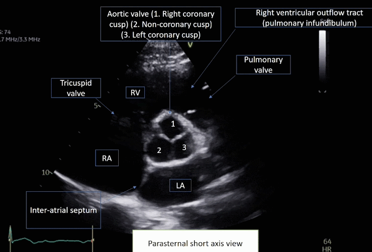
Mitraaliläppätaso:
Vasemman kammion tulisi näkyä ympyrämäisenä. Mitraaliläpästä tulisi nähdä suurempi anteriorinen mitraalipurje ja pienempi posteriorinen purje. Kun ne avautuvat ja sulkeutuvat, ne muistuttavat kalan suuta. Papillaarilihaksia ei tulisi näkyä – jos ne ovat kuvassa, niin on liian tiltannut anturia liian inferiorisesti ja on jo keskikammiotasolla.
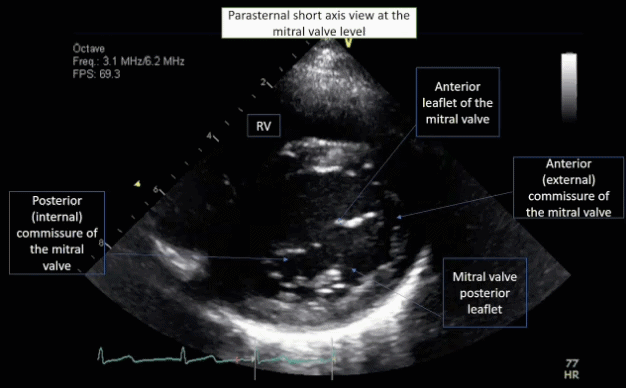

Keskikammiotaso:
Usein sydämen ollessa vertikaalisempi (esim. ylipainoisilla) on anturin pyyhkäiseminen alas 1-2 kylkiluuväliä parempi tapa saada luotettavat projektiot tehtyä keskipapillaari- ja kärkitasoilta. Tilttaus voi aiheuttaa sen, että kammio leikataan vinosti ja tämä nähdään mm. ovaalinmuotoisena kammiona. Varsinkin keskipapillaaritasolta olisi hyvä saada luotettavan kohtisuora leike, koska muuten seinämä- ja EF-mittaukset menevät pieleen. Tavoitteena papillaaritasolla onkin saada kuvaan mahdollisimman pyöreä kammio ja molemmat papillaarilihakset suunnilleen yhtä suurina toisiinsa verrattuna sekä sentteröidä kuva vasempaan kammioon, vaikka oikean kammion tulisikin näkyä vielä sen vasemmalla puolella. Mysökään mitraali- tai aorttaläppää ei tulisi tietystikään näkyä.
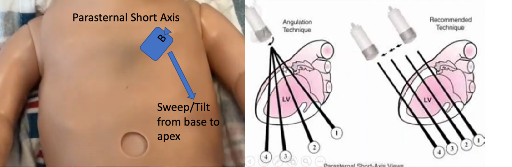
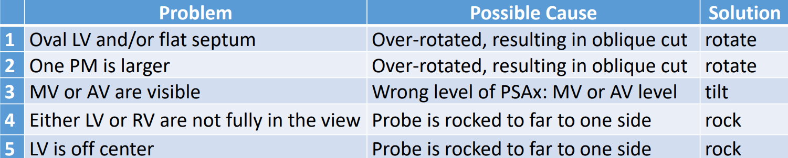
Apikaalinen taso:
Samoin apeksi voidaan leikata liian vinosti, jolloin se näkyy ovaalisena. Terveen apeksin tulisi myös supistua siten, että nähdään kevyttä vastapäiväistä liikettä seinämissä (kammio ei siis supistu täysin sirkulaarisesti kauttaaltaan; enemmänkin kyseessä on “pyyhkeen rutistaminen”). Usein tämä liike on kuitenkin vain heikosti havaittavissa.
Esim. tässä alla vasemmalla kärki on pyöreä ja se supistuu vastapäiväisellä liikkeellä. Oikealla kärki on ovaalin muotoinen eli leikkaantuu vinosti.

7.6 Apikaalinen projektio (Kärkikuva)
Seuraavaksi yleensä siirrytään apikaalisiin projektioihin, joita on monia ja ne ovat pääasiassa nimetty sen mukaan, kuinka monta “lokeroa” sydämestä visualisoidaan. Tärkeimmät ovat apikaalinen nelilokerokuva (A4C) ja viisilokerokuva (A5C), mutta käydään läpi myös kaksilokerokuva (A2C) ja kolmilokerokuva (A3C), koska niilläkin on käyttöaiheensa.
Projektiot ovat nimeltään apikaalisia, koska UÄ-aallot lävistävät sydämen ensimmäisenä sen kärjestä.
7.6.1 Apikaalinen nelilokerokuva (A4C)
Tyypillisesti ensimmäisenä haettava on klassinen nelilokerokuva (A4C, apical four chamber). Sen löytää, kun asettaa anturin n. vasemman nännin alle (yleensä siis rintalihaksen/rintakudoksen ja rintakudoksen junktiossa eli inframammaarisessa taitoksessa). Virallisempana ohjeena lokaatio on 4./5. kylkiluuväli keskiklavikulaarilinjassa.
Käytännössä anturi siis asetetaan kärkisysäyksen kohdalle. Kärkisysäystä ei kuitenkaan tarvitse yrittää palpoida, mutta yleensä oikea lokaatio anturille olisi myös maksimaalisen kärkisysäyksen (PMI, point of maximal impulse) lokaatio.
Anturin kulma on yleensä niin, että UÄ-aallot lähtevät lievästi potilaan päähän päin. Kuitenkin jos angulointi päähän päin on liian suuri, niin saatetaan ensimmäiseksi löytää viisilokerokuva (eli aortta näkyisi). Tällöin kuvan voi korjata nelilokerokuvaksi tilttaamalla anturia pikkuisen jalkoihin päin.
Anturin nypyn suunta on pääasiassa makuasia. Suurin osa opetusmateriaaleista (varsinkin Suomen ulkopuolella tehdyistä) opettaa niin, että A4C:ssa (ja A5:ssa) anturin nypy osoittaa potilaan vasemmalle kello kolmeen. Tällöin sydämen vasen puoli piirtyy näytöllä oikealle ja oikea puoli näytön vasemmalle. Suosittelen opettelemaan heti alkujaan käyttämään tätä kuvantamistapaa, koska siten opetusmateriaalit ja omat toimintamallit käyvät paremmin yhteen, ja myös koska kehittyneempien kaikukuvauslaitteiden automaattitoiminnot on suunniteltu tälle kuvaustavalle.
- Tässä oppaassa suurin osa kärkikuvista on standardilla tavalla kuvattuja, koska netistä ei löydy oikein ollenkaan klippejä vaihtoehtoisesti kuvattuna.
Anturista kannattaa ottaa ns. lapio-ote sen sijaan, että jatkaisi parasternaalisten projektioiden tapaan anturin pitämistä kuin kynää.
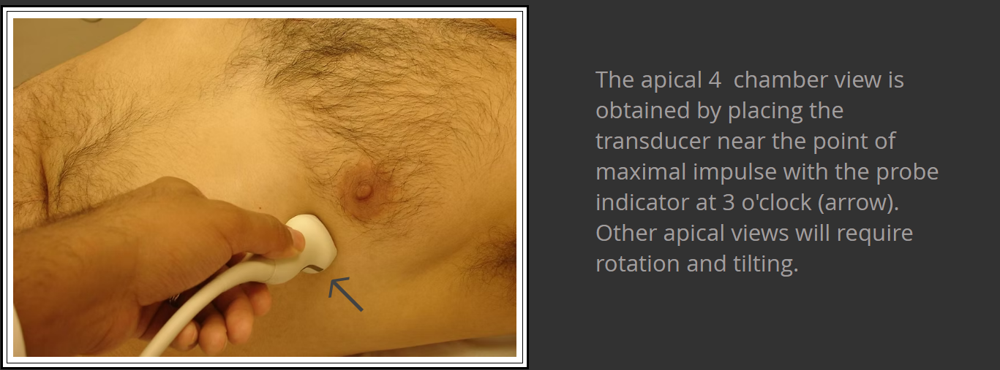
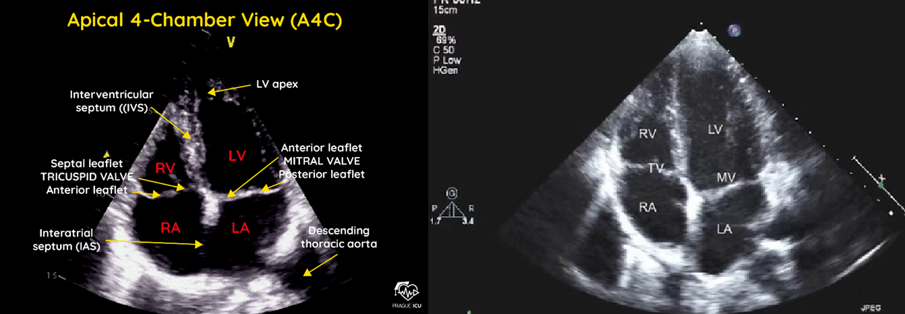
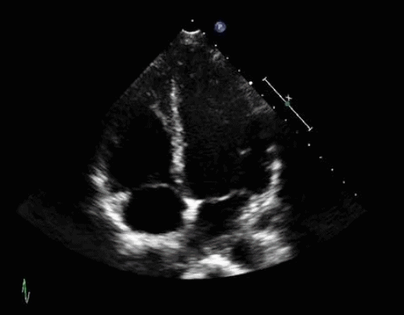
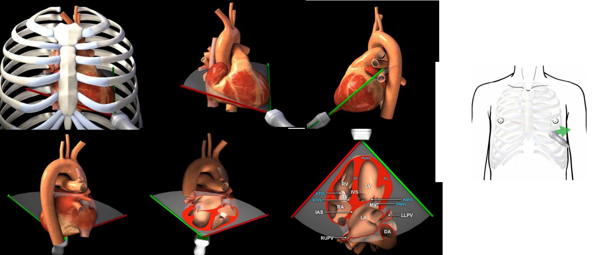
7.6.2 Apikaalinen viisilokerokuva (A5C)
Viisilokerokuva (A5C, apical five chamber) muodostetaan hakemalla ensin nelilokerokuva ja kallistamalla sitten anturin kärkeä hiukan ventraalisesti, jolloin distaaliset UÄ-aallot leikkaavat enemmän aorttaa – aortta on siis apikaalisissa projektiossa ns. lokero eteisten ja kammioiden kanssa, vaikka virallisesti ei anatomisesti lokero olekaan. Vastaavasti nelilokerokuvaan pääsee takaisin kallistamalla anturin kärkeä takaisin hivenen dorsaalisuuntaan.
Kallistuksen ei tarvitse yleensä olla kovinkaan suuri, puhutaan siis usein millimetreistä-senttimetreistä. Joskus ventraalinen kallistus voi hävittää näkyvyyden kokonaan, ja joskus aortta avautuu niin vinosti, ettei aorttaläpän yli pysty kunnolla tekemään mittauksia jatkuvalla dopplerilla. Näissä tapauksissa kannattaa kokeilla siirtää anturia; usein varsinkin vinossa aortassa auttaa se, että liu’uttaa anturia kylkiluuta pitkin lateraalisesti jonkin matkaa kohti potilaan vasenta kylkeä.
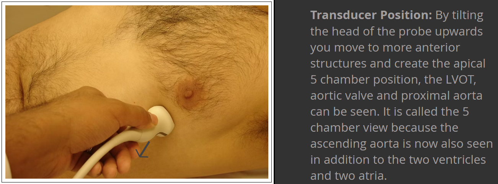
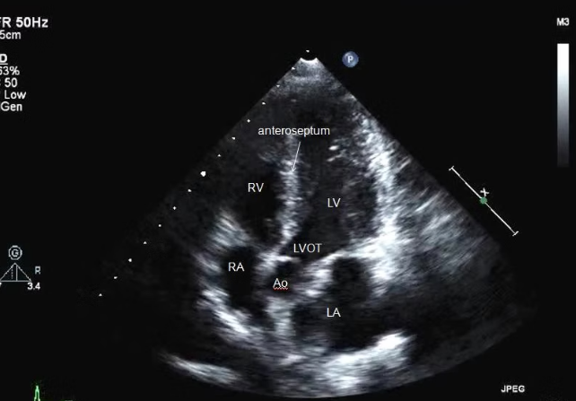
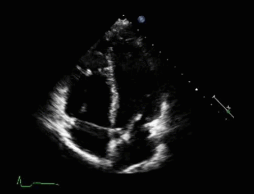
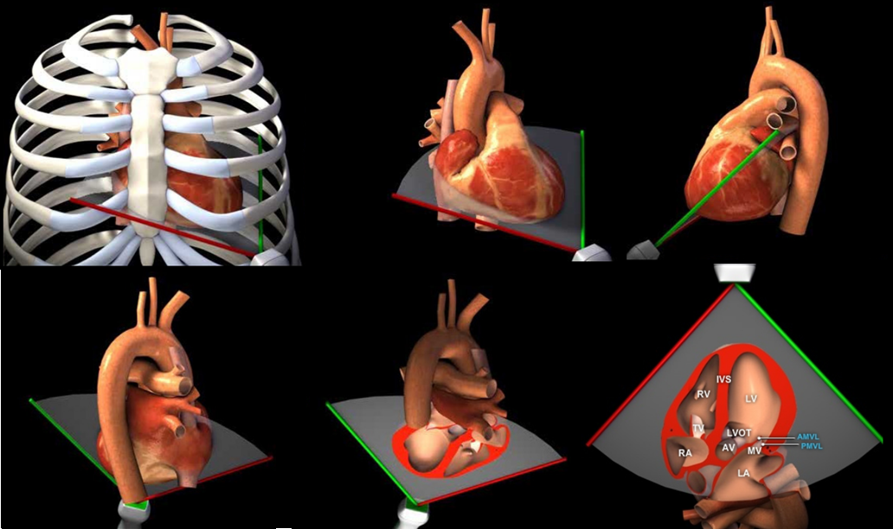
7.6.3 A2C
Kaksilokerokuva on hyvä arvioimaan vasemman kammion seinämiä hieman eri paikoista kuin A4C/A5C – A2C:ssa seinämät koostuvat inferiorisista segmenteistä vasemmalla ja anteriorisista oikealla, kun taas A4C:ssa inferoseptaalisista ja anterolateraalisista (lisää seinämistä ja niiden nimeämisestä paikallisia liikehäiriöitä käsittelevässä kappaleessa). Samalla saadaan myös fokusoitu kuva mitraaliläpästä.
Kaksilokerokuva muodostetaan rotatoimalla A4C:sta anturia 90 astetta niin, että anturin nypy osoittaa nyt kello kahteentoista.
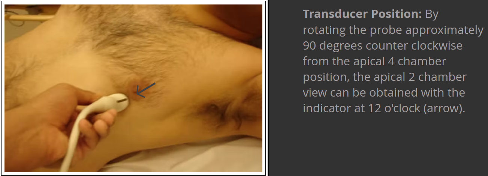
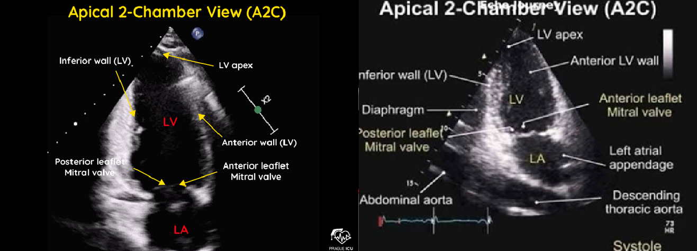

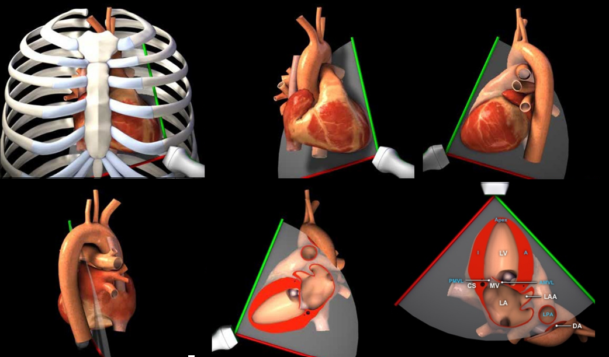
7.6.4 A3C (Apical Long Axis)
Apikaalinen kolmilokerokuva näyttää samoja rakenteita kuin parasternaalinen pitkittäisakseli (PLAX), mutta tässä projektiossa apeksi näkyy hyvin. LV:sta nähtävät seinämäsegmentit ovat käytännössä samat kuin PLAX:ssa eli nähdään inferolateraaliset ja anteroseptaaliset segmentit. Aortta- ja mitraaliläppäkin näkyy ktuen PLAX:ssa, mutta virtaukset ovat suunniltaan dopplermittauksille usein otollisemmat.
A3C:n saa esiin rotatoimalla anturia niin, että nyt sen nypy osoittaa potilaan oikeaan olkapäähän eli n. kello kymmeneen.
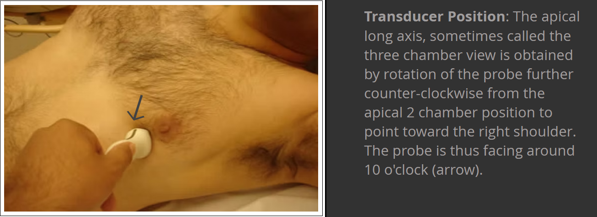
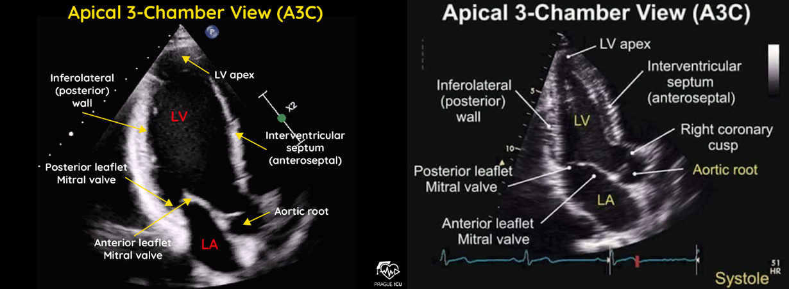
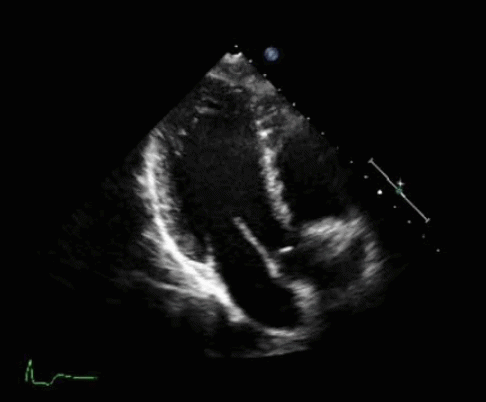
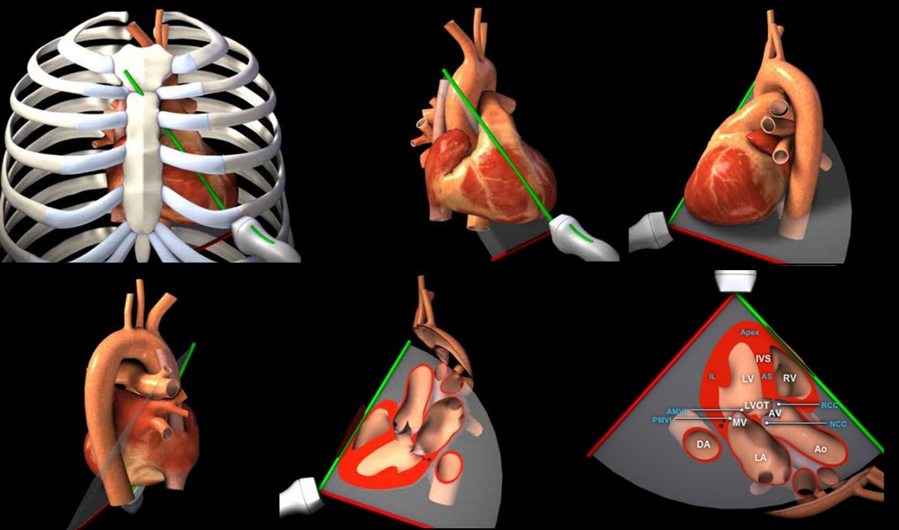
7.6.5 Apikaalisten projektioiden optimointi
Yksi tärkeimmistä apikaalisten projektioiden sudenkuopista on foreshortening, josta jo puhuttiin PLAX:n yhteydessä ja tullaan taas puhumaan LV:n ulottuvuuksia käsittelevässä kappaleessa. Tavoite on siis taas saada varsinkin vasen kammio leikattua sen oikeasta apeksista, eikä väärästä kohtaa niin, että kammion oikeita mittoja ei saada esiin.
Normaalisti apikaalisesti vasen kammio on luotimainen muodoltaan, kun taas väärin leikattu lyhentynyt kammio on usein pussimainen. Väärin leikattu “false apex” usein myös liikkuu sisäänpäin systolessa kammioon toisin kuin oikea apeksi, joka pääasiassa supistuu oman keskipisteensä ympärille ilman merkittävää “ylös-alas-liikettä”. False apex on yleensä myös vinon leikkeen takia seinämältään paksumpi kuin sen pitäisi olla.
Tavoite on siis saada kammio leikattua siitä, mistä se on pisimmillään. Foreshorteningia voi kokeilla vähentää mm. liikuttamalla anturia alemmalle kylkiluuvälille. Voi myös kokeilla siirtää potilasta enemmän kylkiasentoon tuoden oikeaa apeksia lähemmäs sydäntä.
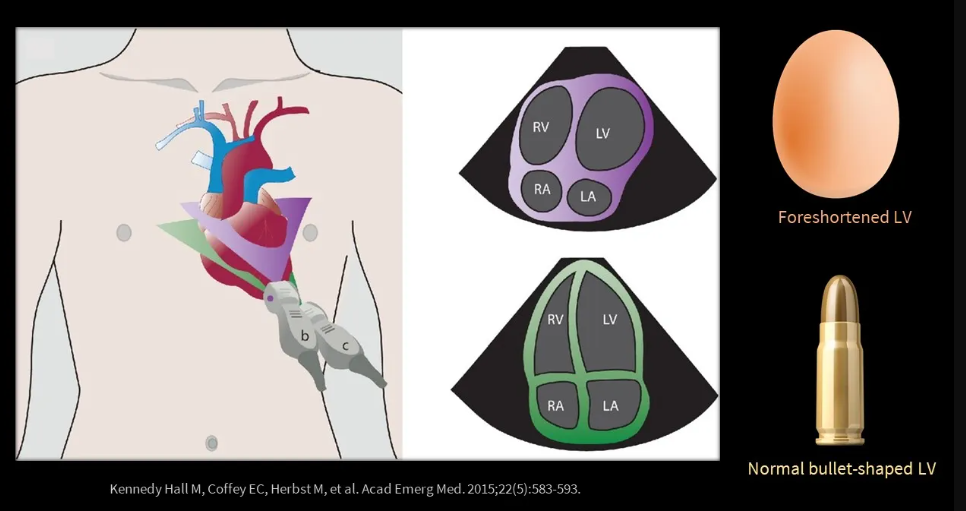
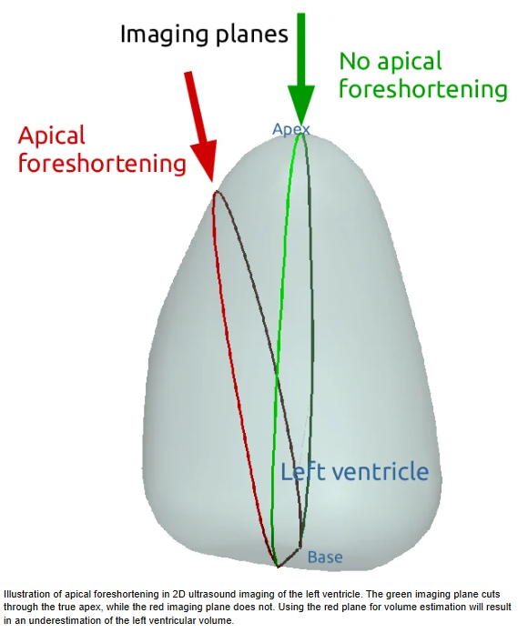
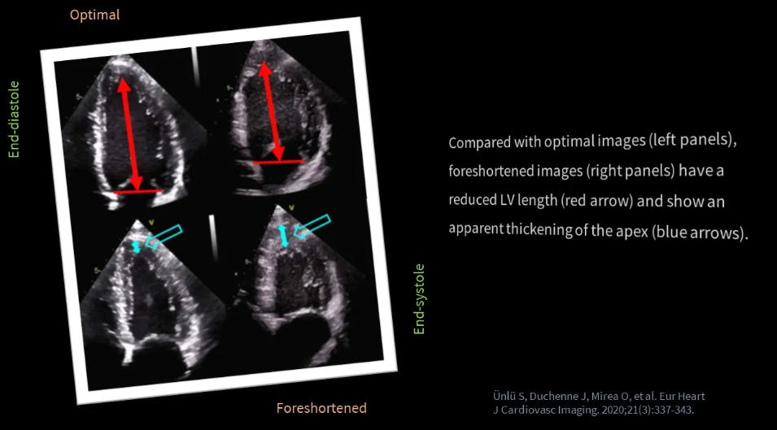
7.7 Subkostaalinen nelilokerokuva (SC, subxiphoidaalinen)
Subkostaalisesti tai subxiphoidaalisesti voidaan visualisoida sydän käyttäen maksaa akustisena ikkunana. Useimmin käytettävä projektio on tyypillinen subkostaalinen nelilokerokuva, mutta on käytössä myös erikoisversioita, kuten Subcostal AV and RVOT ja Subcostal LV sekä tietysti subkostaalinen viisilokerokuva. Käydään ne läpi seuraavassa syventävässä kappaleessa ja keskitytään nyt subkostaaliseen nelilokerokuvaan, josta yleensä vain käytetään yleisnimitystä subkostaalinen tai subxophoidaalinen projektio.
Anturi siis asetetaan miekkalisäkkeestä kaudaalisesti osoittaen UÄ-aallot kraniaalisesti. Anturi pidetään latuskana hyvin ihon suuntaisesti latuskaisesti ja painetaan alas. Näin saadaan aallot kulkemaan miekkalisäkkeen “alta” ja maksan kärjen läpi niin, että ensin lävistetään sydämen kärki ja oikean puolen anterioriset rakenteet. Anturi kannattaa usein asettaa aivan lievästi sternumin keskilinjasta oikealle ja keinuttaa anturia niin, että UÄ-aallot kulkevat lievästi vasempaan olkapäähän päin – näin saadaan väistettyä maha- tai suolikaasuja ja käytettyä enemmän maksan kärkeä.
Subkostaalinen ikkuna on erityisen hyödyllinen ikkuna, kun halutaan tutkia perikardiumeffuusiota. Projektio onkin käytössä varsinkin FAST-ultrassa (Focused Assessment with Sonography in Trauma), kun halutaan poissulkea hemoperikardium.
Toinen hyvin yleinen indikaatio subkostaaliselle projektiolle on, kun muut ikkunat eivät anna hyvää näkyvyyttä. Tällaisia tilanteita on paljon, mutta varsinkin COPD-potilailla ja positiivisella paineella ventiloiduilla on yleensä todella huono näkyvyys erityisesti parasternaalisesti, koska hyperinfloituneiden keuhkojen anterioriset rajat liikkuvat sisäänpäin ja toimivat “ilmapanssarina” ultraääniaalloille (ääniaallot siroavat ilmassa ja näkyvyys katoaa). Näillä potilailla usein ainoa ikkuna, joka tarjoaa riittävän hyvän näkyvyyden, on subkostaalinen, koska maksa toimii “akustisena ikkunana” ja päästää ultraääniaallot kulkemaan suoraan sydämeen ilman häiritsevää ilmavaa välialuetta.
SC on myös hyvä projektio interatriaalisten ja interventrikulaaristen septaalisten defektien näkemiseen.
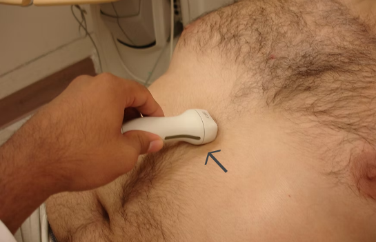
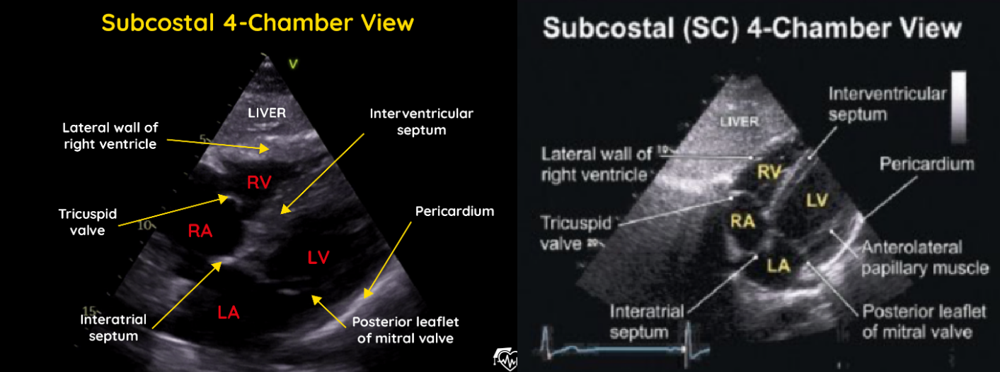
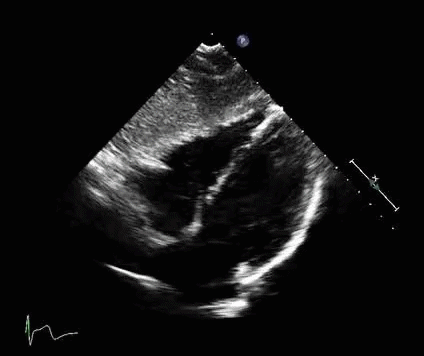
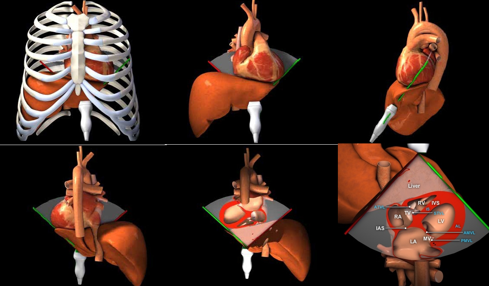
7.7.1 SC:n trobleshooting
Potilas kannattaa pitää selällään eikä kylkiasennossa. Potilaan jalat kannattaa mahdollisuuksien mukaan laittaa koukkuun, koska tämä rentouttaa suorat vatsalihakset ja mahdollistaa anturin painamisen alas vähäisemmällä resistenssillä. Potilasta tulee myös ohjata rentouttamaan vatsansa. Potilasta voi myös pyytää ottamaan syvän sisäänhengityksen ja pitämään tätä. Tämä pakottaa pallean alaspäin ja samalla sydänkin tulee lähemmäs anturia.
Subkostaalisesti on usein järkevää käyttää runsaasti geeliä. Yleinen nyrkkisääntö kaikissa projektioissa on se, että ei voi koskaan käyttää liikaa geeliä, mutta subkostaalisesti on usein hyvinkin tarpeellista käyttää normaalia enemmän geeliä, koska anturi ei aina muuten ole täysin kontaktissa ihoon sen latuskaisen asennon takia. Suuri geelimäärä mahdollistaa UÄ-aaltojen hyvän kulkureitin iholle esim. anturin yläosasta, vaikka itse osa ei olisikaan kontaktissa ihoon.
7.8 Subkostaalinen viisilokerokuva (Subcostal 5C)
Aivan samoin kuten apikaalisessa nelilokerokuvassa, niin subkostaalisestikin voidaan muuttaa klassinen nelilokerokuva viisilokerokuvaksi (eli visualisoida aortta eteisten ja kammioiden lisäksi) tilttaamalla anturia hieman kraniaalisesti, jolloin saadaan aorttaakin leikattua.
Subkostaalinen viisilokerokuva mahdollistaa siis samat mittaukset kuin apikaalinenkin viisilokerokuva. Aortta kuitenkin suuntautuu heikommin anturin suuntaisesti kuin apikaalisesti, joka rajoittaa mittausten tekoa ja projektion käyttöarvoa. Subkostaalinen viisilokerokuva onkin yleensä vain selvästi toissijainen apikaaliselle versiolleen.
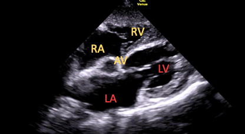
7.9 Subkostaalinen alaonttolaskimo (IVC)
Viimeinen todella tärkeistä projektioista, joka käydään läpi, on alaonttolaskimon (IVC, inferior vena cava) visualisoiminen subkostaalisesti. IVC:n paksuuden ja jäykkyyden mittaaminen on tärkeä osa varsinkin nestevolyymin arvioimista ja sitä tulee osastoilla ja päivystyksessä tehtyä paljon.
IVC saadaan esiin sijoittamalla anturi vertikaalisesti heti miekkalisäkkeen kaudaalipuolelle, anturin “nypy” osoitettuna kraniaalisesti. Usein pieni kraniaalinen keinutus kohti sydäntä auttaa visualisoimaan oikean eteisen mukaan kuvaan. Lisäksi pieni maksaa kohden suunnattu tilttaus voi auttaa visualisoimaan alaonttolaskimon. IVC:n vierellähän vasemmalla puolella kulkee vatsa-aortta, jonka voi usein sekoittaa IVC:ksi. Tilttaus maksaa päin auttaa tuomaan IVC:n esiin ja taas tilttaus pernaan päin visualisoi enemmän vatsa-aorttaa.
Projektiossa nähdään siis ideaalisti IVC, siihen liittyvä maksalaskimo (hepatic vein) ja vielä oikea eteinen, johon IVC laskee.
Käydään IVC:n kuvantamista ja mittauksia läpi tarkemmin sitä käsittelevässä kappaleessa.
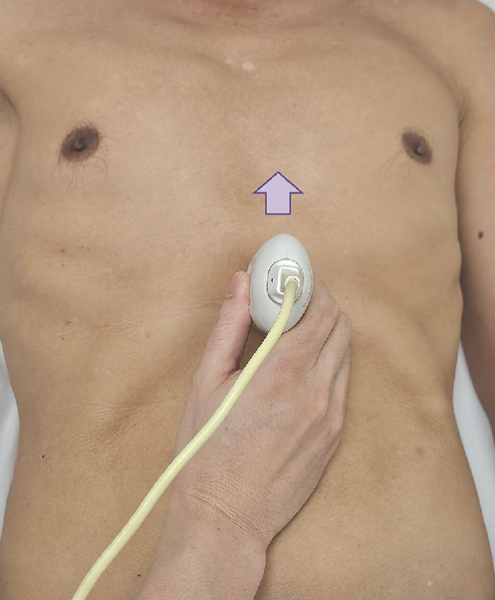
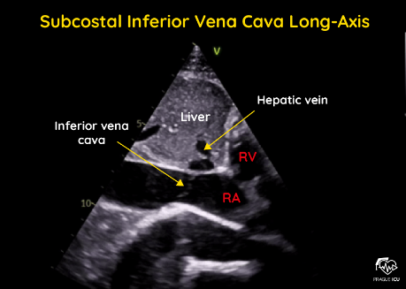
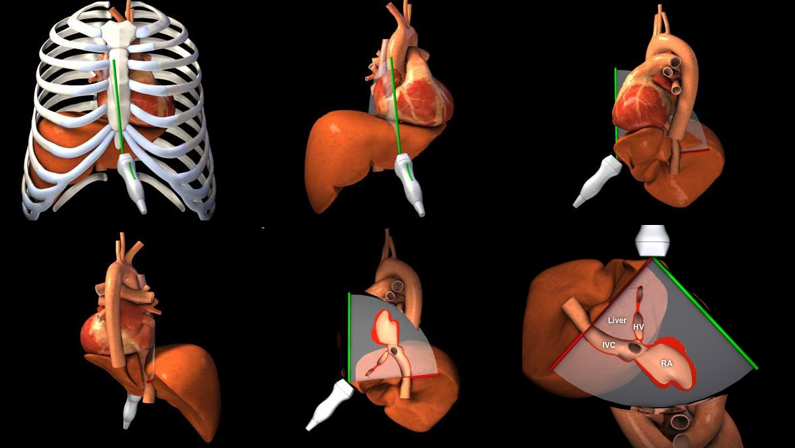